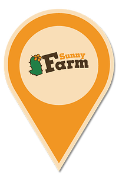

About Us
Location
Sunny Farm - a farm - friendly nature, with an area of 15.000m2, situated in Ap 5, Thanh Hoa, Ben Luc District, Long An Province. This is farming country, mainly rice, agricultural products and fruits, known for specialty Seedless Lemon, pineapple, sugarcane, potato noodles; along with the Mekong Delta province neighboring food supply, rice for people across the country. Around the borders with canals connected to large Vam Co Dong River, Vam Co Tay. The Ho Chi Minh City 40km motorway, where it is convenient for tourists to visit and experience.
Sunny Farm was formed and built the model of the farm Farming - Growing to create funds to maintain operations, just a place for the young people can come to study, learn and apply these techniques the most advanced agriculture. At the same time Sunny Farm is also designed to be a playground life skills training needed for today's youth.